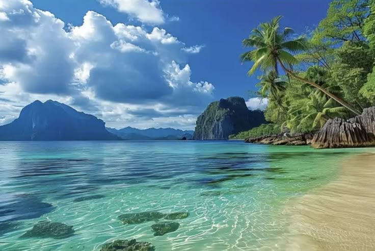

01 / EKOSISTEM
Kehidupan Laut
Kenali terumbu karang, biota laut, dan keanekaragaman hayati yang perlu dilindungi.
Pelajari lebih lanjut →
EDUKASI LINGKUNGAN · SDG 13 & 14
Mengenal keindahan laut, memahami ancamannya, dan memulai langkah kecil untuk menjaga pesisir kita.
Mulai Menjelajahi →KENALI PESISIR KITA
Laut dan pantai bukan hanya indah, tetapi juga menjadi rumah bagi banyak makhluk hidup. Yuk, kenali lebih dekat!
01 / EKOSISTEM
Kenali terumbu karang, biota laut, dan keanekaragaman hayati yang perlu dilindungi.
Pelajari lebih lanjut →
02 / PERLINDUNGAN
Pahami dampak sampah dan pentingnya menjaga habitat alami di wilayah pesisir.
Baca artikel →
03 / AKSI NYATA
Lakukan kebiasaan sederhana untuk mengurangi sampah dan menjaga lingkungan.
Lihat panduan →TUJUAN PEMBANGUNAN BERKELANJUTAN
JagaPesisir mendukung edukasi tentang perubahan iklim dan perlindungan ekosistem laut.
Meningkatkan kesadaran dan tindakan menghadapi perubahan iklim.
Mendukung perlindungan laut dan sumber daya pesisir.
MULAI DARI DIRI SENDIRI
Temukan aksi sederhana yang bisa kamu lakukan setiap hari.